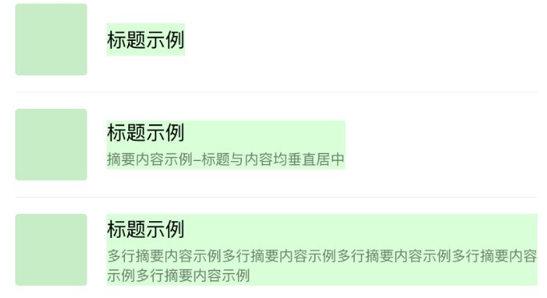

如果之前你接触过网页开发中的flexbox布局，基本上你可以略过这节。但有一点需要注意的是，你的小程序要求兼容到iOS8以下版本，需要开启样式自动补全。开启样式自动补全，在“设置”—“项目设置”—勾选“上传代码时样式自动补全”。
图4-2 开发者工具开启样式自动补全
在小程序开发中，我们需要考虑各种尺寸终端设备上的适配。在传统网页开发，我们用的是盒模型，通过display:inline | block | inline-block、 position、float来实现布局，缺乏灵活性且有些适配效果难以实现。比如像下面这种常见的信息列表，要求内容高度不确定下保持垂直居中：

图4-3 常见的信息列表排版方式
这种情况下，我们更建议用flex布局。
在开始介绍flex之前，为了表述方便，我们约定以下术语：
采用flex布局的元素，简称为“容器”，在代码示例中以container表示容器的类名。
容器内的元素简称为“项目”，在代码示例中以item表示项目的类名。

图4-4 container容器和item项目